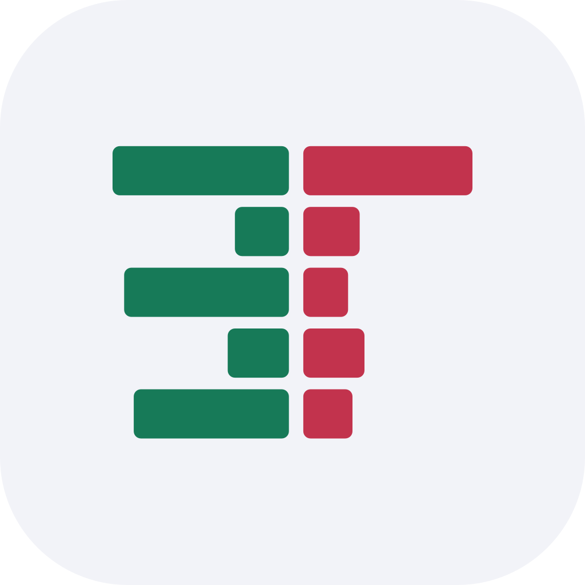

eTape
A free, open-source day-trading platform — read the tape, work the ladder, fire orders from hotkeys.
Real-time charts · Level 2 DOM ladder · Time & sales · Multi-broker execution
Projects

A free, open-source day-trading platform — read the tape, work the ladder, fire orders from hotkeys.
Real-time charts · Level 2 DOM ladder · Time & sales · Multi-broker execution
Desktop trading journal that turns broker CSVs into closed positions, charts, and analytics.
FIFO trade matching · Performance dashboard · P&L calendar · Per-trade candlestick review
Candlestick charts for Compose Multiplatform, drawn on a native Canvas — no WebView, no JS bridge.
Kotlin Multiplatform · Native Canvas rendering · Published on Maven Central